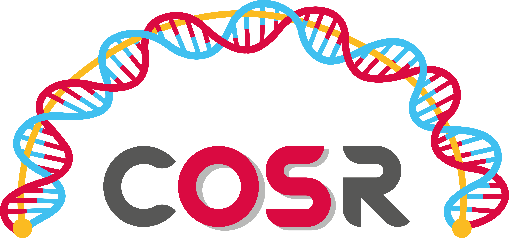

Helping people make the world a better place through bioinformatics and data analysis.
Helping people make the world a better place through bioinformatics and data analysis.
Hey there! My name is Santo Diprima. I'm a Bioiformatician with a passion for tackling challenges.
I bring professional skills in Bioinformatics and artificial intelligence from my academic and work journey.
I'm on the lookout for projects that dive into innovative bioinformatics and AI techniques to solve real-world biomedical enigmas.
Let's dive in!
Wound angiogenesis instructs mesenchymal barrier compartments in the regenerating nerve
01/03/2022 - 01/03/2023

01/03/2022 - 01/03/2023
IRCCS Ospedale San Raffaele
Center for Omics Sciences
Bioinformatics research area
01/03/2021 - 01/03/2022
IRCCS Ospedale San Raffaele
Division of Neuroscience
Molecular neurobiology Unit
01/03/2021 - 01/03/2022
04/10/2019 – 22/07/2021

04/10/2019 – 22/07/2021
Tor Vergata University of Rome
Final Grade: 110/110 cum laude
08/09/2016 – 26/07/2019
University of Eastern Piedmont
Final Grade: 104/110
08/09/2016 – 26/07/2019
??/!!/2012 – ??/!!/2016
??/!!/2012 – ??/!!/2016
Planet Earth
Kindom of Yummy Food
Stresstopia
14/09/2007 – 05/07/2012
I.I.S.S. Amato Vetrano
Final Grade: 95/100
14/09/2007 – 05/07/2012

I'm open to new opportunities and collaborations in the field of bioinformatics.
Whether you have intriguing projects, questions, or an interest in personalized training sessions, feel free to reach out.
I value your feedback and am available for consultations.